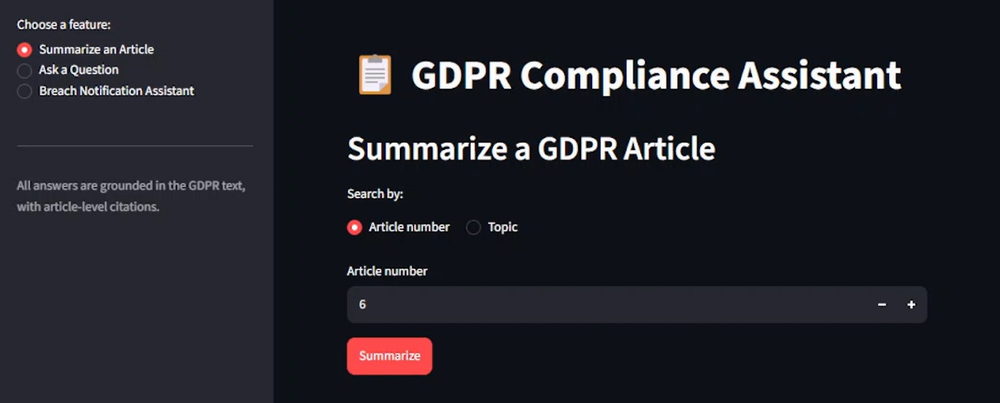
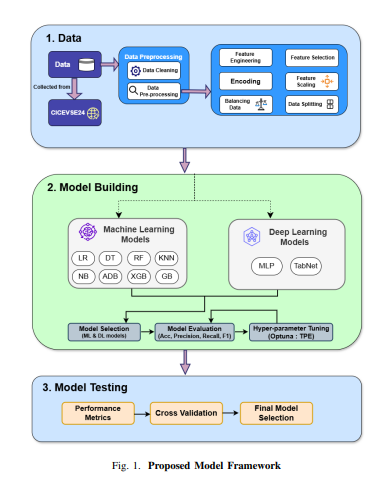

This page highlights selected research projects, industrial systems, and contributions spanning Machine Learning, AI-based Cybersecurity, Anomaly Detection, and Agentic AI.

AI-powered regulatory assistant that uses Retrieval-Augmented Generation to answer GDPR compliance questions with relevant regulatory context and article-level references.
Tech Stack: Python, LangChain, Google Gemini, Hugging Face Embeddings, ChromaDB, Streamlit, AWS EC2

Developed an ensemble-based ML intrusion detection system for EV charging infrastructure using the CICEVSE2024 dataset, Evaluated multiple ML and deep learning models, with Gradient Boosting delivering 99.02% accuracy and 99%+ precision, recall, and F1-score.
Tech Stack: Python, Scikit-learn, Keras, Google Colab, Kaggle, Gradient Boosting, Random Forest, XGBoost, CatBoost, ANN, TabNet, SMOTE-ENN
Selected client-oriented and independent projects applying machine learning, computer vision, image processing, and data analysis to practical problems across different application domains.
Applied research and freelance projects in medical imaging, computer vision, machine learning, and intelligent decision systems.